[第2部]
持続可能な企業として、
目指すべき姿
勉強会・第12回のワークショップにてチーム単位で作成した「将来構想シート」、そして第14回のワークショップで作成した「部門ごとの価値創造マップ」を発表。その後、前田社長・永尾専務とSX※3や当社が目指すべき姿について話し合いました。
※3 SX：Sustainability Transformationの略。企業が「稼ぐ力」を維持するために、持続可能性を重視した経営へ転換を図ること。経済産業省の「サステナブルな企業価値創造に向けた対話の実質化検討会」で提唱された。
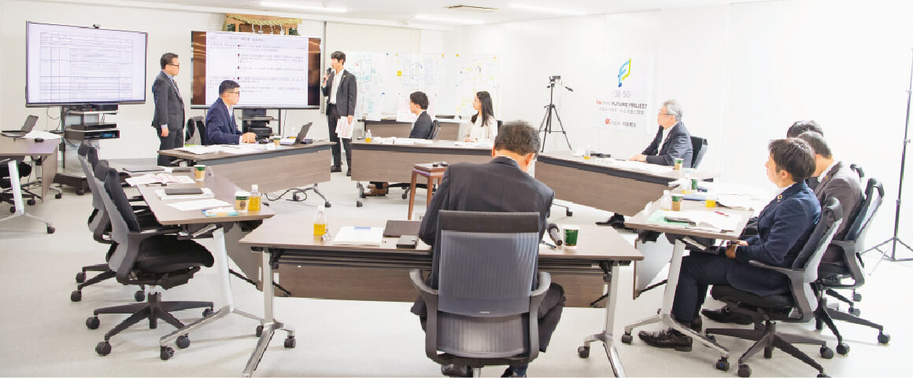
● 将来構想シート（第12回）
社会や市場、自然環境、気象などの変化を見据え、自社および自部門の「これまで」を理解した上で、バックキャスト視点から2030年に向けての「これから」を構想するワークを実施。内閣府が配布する「経営デザインシート」を本勉強会向けにアレンジしたものを、ひな型として使用しました。
● 価値創造マップ（第14回）
第12回の「将来構想シート」をベースに、自部門がどのような資源を活用して、どのようにサステナビリティ経営の推進に関わるかをまとめたマップを描くワークを行いました。IIRC※4の提唱する「価値創造プロセス（オクトパスモデル）」や他社の例を参考にしつつ、自由に作成しています。
※4 IIRC：International Integrated Reporting Councilの略。国際統合報告評議会。イギリスにある世界的な非営利組織。企業のこれまでの業績などの財務情報だけでなく、環境保全や地域貢献をどれだけしているかという非財務情報もまとめた情報公開のフレームワークである「統合報告（Integrated Reporting）」の開発・促進などを行う。
土木チーム

防災・減災のスペシャリスト集団
 ［土木チーム］将来構想シート
［土木チーム］将来構想シート
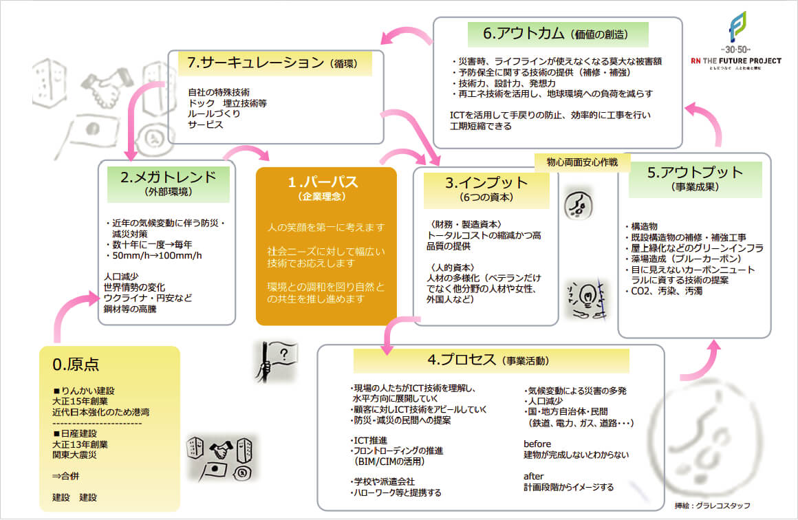［土木チーム］価値創造マップ
─ 佐藤 ： 土木部門の「将来構想シート」を説明します。当社はこれまでも耐震補強工事やインフラ工事を通じて、地域住民の生命や財産を守ってきました。今後は自然災害が頻発することを想定し、防災・減災のための当社独自の新技術、他社との協働、そして技術者の育成や技術の継承が必要と考えました。
─ 小澤 ： 次に「価値創造マップ」です。土木部門の原点は、当社の前身であるりんかい建設・日産建設が、大正時代に社会貢献を目的に創業した点にあります。今後は防災・減災対策の需要に対し、「人・社会・環境」※5という理念のもと、防災・減災の民間への提案などをより積極的に行うことになると思います。その結果、老朽化した既設建造物の補修・補強工事が増加し、予防・保全、環境負荷軽減、工期短縮といった価値が生まれます。これらが循環することで、独自技術や施工実績が増え、時代によって変化もしていくと考えました。
─ 永尾専務 ： 今後は防災・減災や既存インフラの補修・維持管理のような継続性の高い案件以外に、例えば再生可能エネルギーの普及で不要になった石油プラントの後処理といった新しいニーズが一時的に多発すると思います。広い視野から能力を高め、社会貢献できる分野をさらに広げていきたいですね。
─ 細川 ： 最後に「SXのあり方」についてです。2030年に向けて当社は、企業理念である「人・社会・環境」をベースにして、自然災害、人口減少、カーボンニュートラルといった時代の変化に対応できる組織づくりと、新しい工法や技術の追求が大切だと考えます。そのために我々社員は、時代の流れを掴みながら、各々の役割や立場に応じてスキルを高めていくことが必要ではないかと思います。
─ 前田社長 ： 勉強会を通じて、「SXへの取り組みは今後企業が持続的に成長するために不可欠だ」という認識を持っていただけたようですね。しかし、必要な取り組みがすべての会社で実現できるわけではありません。まず、自分たちの規模や体力に合った取り組みから始まります。そこで活かされるのが、現在持っている技術や建設機材、情報、ネットワークといった資本・資源です。これらを最大限に活用すること、そして社員がSXをしっかり理解すること。さらに、細川さんも先ほど「各々の役割や立場に応じて」とおっしゃいましたが、SXに自分も協力しているという視点から自分のタスクを実行していくこと。これらが重要になると思います。頑張って取り組みましょう。
※5 人・社会・環境:当社の企業理念を省略したもの。全文はこちらに掲載。
建築チーム
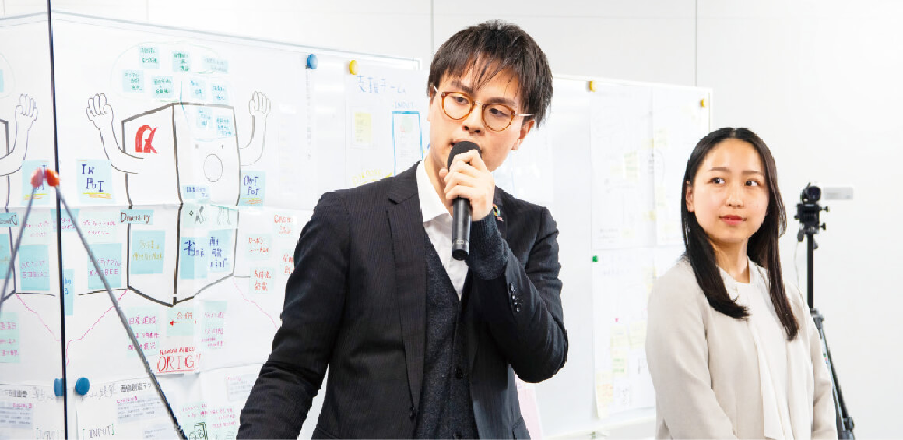
環境社会に配慮し、地域に融け込む
─ 伏見 ： まず「将来構想シート」を説明します。当社はこれまで長年お付き合いのあるメーカーやお客さまからの信頼、技術、社員などを資源に、品質とコストを両立した建物や、災害に強い便利な建物を提供してきましたが、2030年の事業については「地域共生」と「地方創生」をテーマに構想してみました。地域に根ざした工場スペースの活用提案やカーボンニュートラルな工場の建設について、外部との協業で実現することを考えています。
─ 宮村 ： 「価値創造マップ」では、最近はSDGsやESGに対応した建築設備が求められていることを背景に、地域のメーカー等のお客さまに対し、省エネルギー化などの環境配慮型やBCP対策を備えた建築物にも対応します。その際、IT人材の派遣や他社との協働、そして、社外勉強会などから得た知識の活用なども組み込んだビジネスモデルを構築します。
─ 伏見 ： 最終的には、評価認証制度への対応やBCPの実現などの価値提供を通じて受注件数や利益率を高め、これらをサイクル化することで収益性の高い地域共生・地方創生ビジネスを実現できれば、と考えています。
─ 永尾専務 ： 「地域に融け込む」事業を展開するにはお客さまからの信頼獲得が鍵ですが、そのためには継続した営業活動や安全・安心な施工の徹底が、より重要になると思います。
─ 宮村 ： 最後に「SXのあり方」についてです。CASBEEのような知識の獲得と社内での共有で、環境意識を会社全体で高めることがまず必要と考えます。また10年後20年後も安心して働き続けられる魅力的な会社づくりのために、制度改革も不可欠だと感じています。
─ 前田社長 ： そうですね。社員の皆さんが永きに渡り安心して働ける環境をつくるにはどうすべきか、そして社員を含めたすべての関係者にとって魅力的な会社になるにはどうしたらよいか。私は社長就任以来これらの課題についてずっと考え続け、人事改革をはじめとするさまざまな施策に取り組んでいます。これらを実現するには、皆さん一人ひとりの理解と協力が欠かせません。難しいことかもしれませんが、できることから一歩ずつ進めていけば、達成できると確信しています。会社としては全力で制度改革に取り組みますので、皆さんもぜひ、すべてを会社の制度に依存するのではなく、自分なりの努力を積み重ねてください。「魅力的な会社」という評価にきっとつながります。
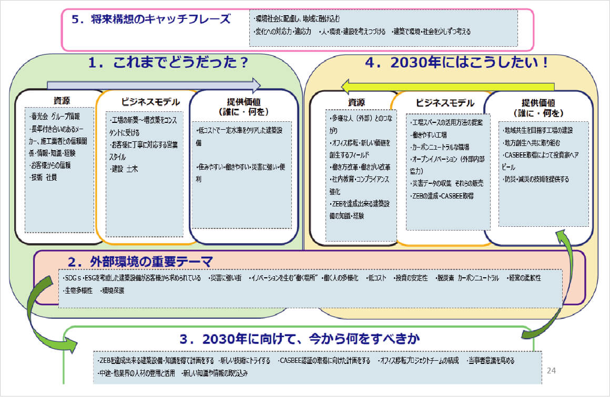［建築チーム］将来構想シート
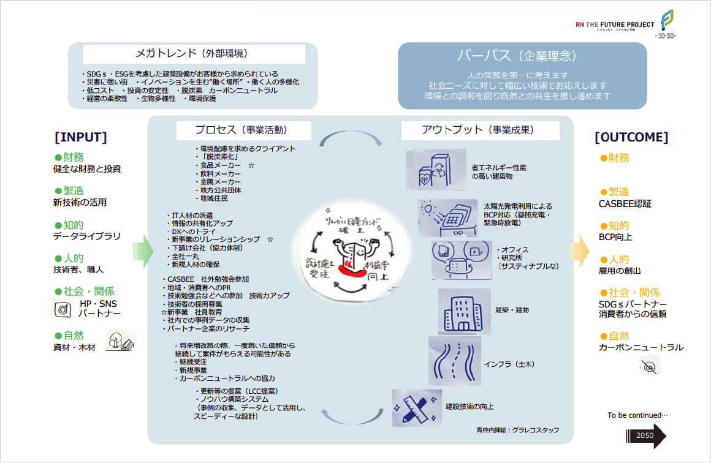［建築チーム］価値創造マップ
支援チーム
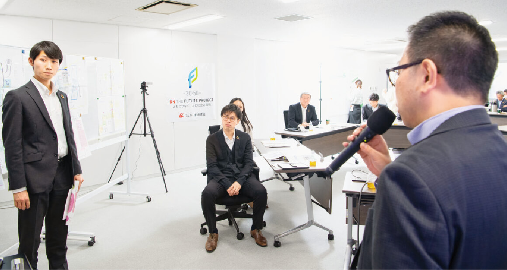
入りたくなる会社（+家族に褒められる会社）
─ 山本 ： 私たちは「人材」にフォーカスしました。まず「将来構想シート」ですが、ゴールは「入りたくなる会社」です。これまでは「いい人材を採用するには」が出発点でしたが、今後は「よい人材が自然と集まる会社」からバックキャストで考えるべきだと思います。
─ 永尾専務：「入りたくなる会社」、とてもいいですね。私はそれと同時に「家族に褒められる会社」も目指したいと思っています。家族に仕事の内容を褒めてもらえる会社になれば、モチベーションのギアが一段階上がり、理想的なサーキュレーションが形成されるのではないでしょうか。
─ 小幡 ： 次に「価値創造マップ」です。メガトレンドは、建設業界特有の問題として、3K（キツい・汚い・危険）による人材不足や担い手の減少などを挙げました。よい人材を獲得するためには、求職者や就活生に向けた「求人」、そして社員に対する「働き方改革・業務改善・社員教育」が必要で、これらを実現するには従来の施策だけでなく、DXの活用が不可欠だと考えます。これらを通じて働きやすい労働環境やスキルアップなどを実現し、それが人的資源になって、循環していくイメージです。
─ 山本 ： 続いて「SXのあり方」ですが、今後は人材強化のために、社員教育や勉強会をより充実させて、一人ひとりの知識と能力を高めていくことが必要ではないでしょうか。また、DXの導入は働き方改革にもつながるため、積極的に取り組むべきだと思います。
─ 小幡 ： さらに、若い世代の考え方をベテラン層が理解することや、習得した知識や技術を若い世代に継承していくことも大切だと感じています。
─ 前田社長 ： おっしゃる通り、会社の業態を維持し発展させていくには、人材の確保と一貫した教育が必要です。特に近年、人材の確保は建設業界全体が苦労しており、当社も例外でありません。しかし、できない理由を考えるよりも、できる方法を考えることが大切です。社会の変化に合わせ、過去の形式にこだわらず、具体的な目標を立て、強い意志を持って取り組みたいと思います。
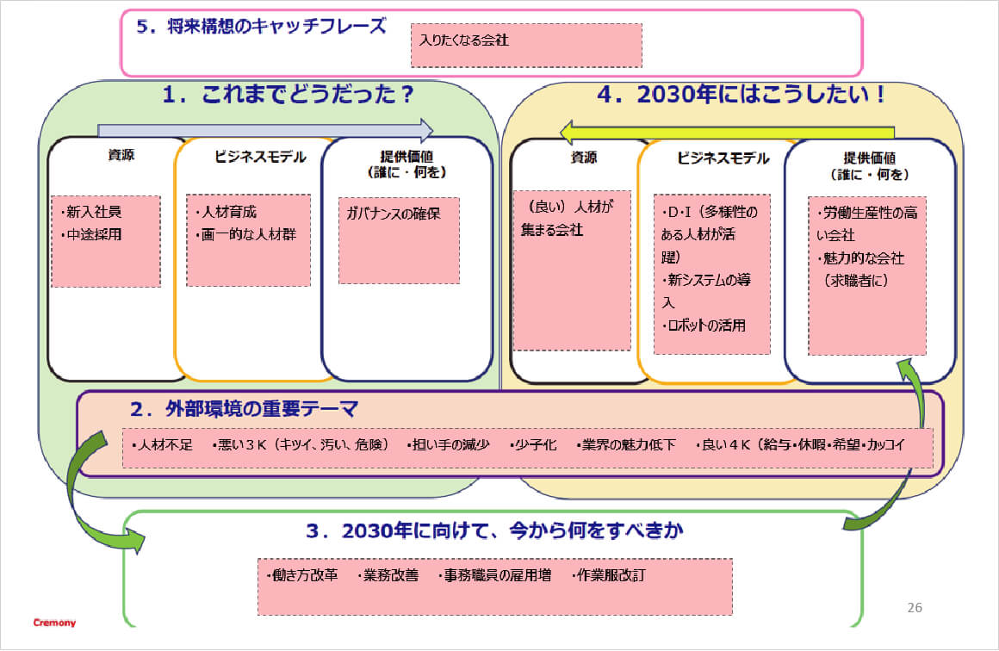［支援チーム］将来構想シート
 ［支援チーム］価値創造マップ
［支援チーム］価値創造マップ
まとめ・総評
「軸とスパイラルアップ」で、りんかい日産建設らしいSXを
─ 岸先生 ： 発表ありがとうございました。各チームとも、地域や取引先、社員などの「人」との関わりを、各々の立場から考えた内容になっていたように感じました。勉強会で得た気づきや学びをどう広げていくか、そして社会の急速な変化にどう対応すべきかなど、とても有意義な対話になったと思います。
─ 前田社長 ： 特に社会の変化への対応は、経営戦略における重要な課題の一つですね。実現し続けていくには、過去の慣習などにとらわれず、積極的に変革していくことが大切です。
─ 永尾専務 ： そして、それを当社ならではのやり方で継続することも重要だと感じました。
─ 前田社長 ： 2030年に向けて、継続すべき部分は継続し、変えるべき部分は柔軟に変えていくことで、当社らしいSXを実現できればと思います。
─ 永尾専務 ： 変化に応じて柔軟に改善していくことで企業価値を高めていくという考え方は、PDCAの手法などで言われる「スパイラルアップ」そのものですね。スパイラルによる価値向上の先に、SDGsの目標達成やカーボンニュートラルの実現、そしてSXがあるのだと思います。
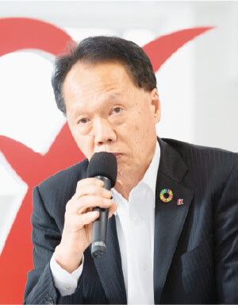
─ 岸先生 ： そうですね。
─ 前田社長 ： 理想的なスパイラルを実現するためには、具体的には特に何が必要なのでしょうか。
─ 岸先生 ： まずは「人」ですね。変化への対応力があり、柔軟な発想でさまざまな課題の解決に取り組める人材が必要かと思います。

─ 永尾専務 ： その人材が、課題解決を日常的なレベルから、少しずつ実現し続けること。これが最も大切ではないでしょうか。
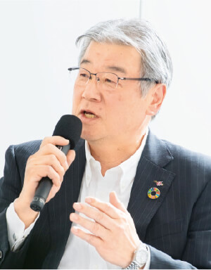
─ 前田社長 ： 同感です。小さなことからでもいいから、積極的かつ継続的に取り組み、必要に応じて変えていくべきです。ただし、経営理念だけは変えるべきではない。
─ 永尾専務 ： 理念は不動の「軸」ですね。スパイラルアップが継続されることで、当社の「人・社会・環境」という軸は、どんどん強くなっていくと思います。
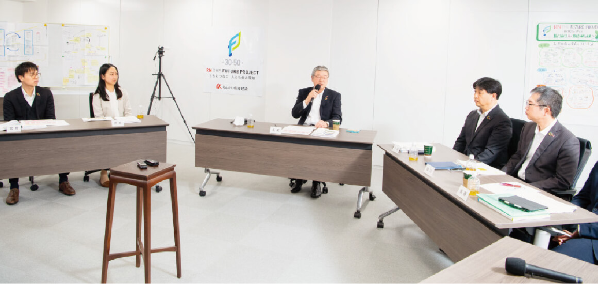

─ 岸先生 ： 「軸とスパイラルアップ」の実践、そしてこのミーティングで得た学びや気づきが他のステークホルダーにも広がっていくと、サステナビリティ経営全体がより実りあるものになるはずです。
それでは以上で、タウンホールミーティングを終了いたします。皆様の今後のご活躍と貴社の発展を祈念いたします。ありがとうございました。
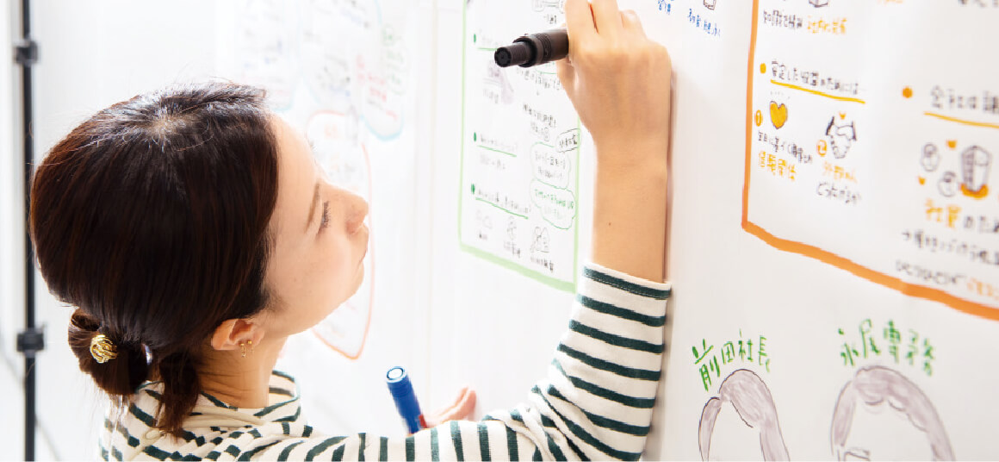
グラフィックレコーディングで「見える化」
当日の様子は、内容をイラストや手書き文字で分かりやすくリアルタイムに表現する「グラフィックレコーディング」で記録しました。完成したシートは未参加社員への情報共有や社内浸透などに利用します。

SDGs勉強会 タウンホールミーティング出席者
代表取締役社長
前田 祐治
取締役専務執行役員
永尾 秀司
土木本部 技術部 設計課
小澤 義之
土木本部 営業部 営業課
細川 徹也
東京土木支店 プロジェクト推進部
プロジェクト推進課
佐藤 友樹
建築本部 設計部 意匠設計課
宮村 星耶
事業統括本部
環境・再生エネルギー部 営業課
伏見 菜緒
管理本部 経営企画部 経営企画課
山本 慎太郎
管理本部 経営企画部 経営企画課
小幡 友康
※記載の部署はタウンホールミーティング実施時のものです。
岸 和幸
キシエンジニアリング株式会社
代表取締役
東京都市大学・教育開発機構
「ひらめき・こと・もの・ひと」づくりプログラム 特任教授
「人と自然が調和している持続可能な未来の共創」をテーマに、サステナビリティ経営の全般的なサポートや、学生をはじめとする次世代の啓発活動を行っている。
りんかい日産建設では、2021年7月より社内縦断研修プロジェクト「SDGs勉強会」の講師を務める。